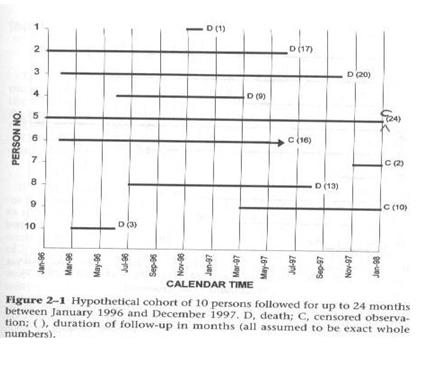
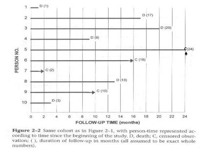

Follow-up Time
Lead Author(s): Laurel Beckett, PhD; Jeff Martin, MD
Definition of Follow-up Time
Example of Follow-up Time
Among 250 total subjects, 100 died during follow-up. Of the 150 not known to have died, 10 were lost to follow-up after a median of 2.5 years (range 0.4 to 5.1), and the remaining 140 were censored at the end of our follow-up period at 12/31/2007 with a median follow-up time of 3.7 years (range 2.0 to 6.9).
Starting Times in Hypothetical Cohort
This diagram of a hypothetical cohort (from Szklo and Nieto) shows how individuals in a study usually start at different times but may drop out before the end of the study, or may experience the outcome (e.g. death) before the end of the study.

Different Follow-up Times
When calculating cumulative incidence in a cohort you must take into consideration:
- Subjects have different starting dates.
- Subjects have different follow-up after enrollment.
Having identical and complete follow-up on all subjects is the exception to the norm (See examples of an HCV/HIV infected cohort). A typical cohort study may take months to years to recruit all of the participants.
Most cohorts have a single ending date but different starting dates for participants because of the recruitment process:
- This guarantees there will be unequal follow-up time.
- In addition, it is very rare not to have drop outs.
Since most studies have a single ending date, subjects enrolled at the end of the recruiting process are going to have less follow-up time in the study than those enrolled at the beginning, even without having any subjects drop out, die, or be lost to follow-up. When those latter categories are also taken into account, there is usually great variation in how long different persons are observed in a cohort study. Aside from the variation in time followed, having individuals who are lost to follow-up are a major threat to the validity of conclusions about incidence. As we stressed last time, losses to follow-up are the primary problem in the validity of cohort studies.
Since cumulative incidence has to be defined as per some time period, it is incorrect to say, when follow-up times vary by individual. The cumulative incidence in a cohort study that ran for 3 years was the proportion with the diagnosis divided by the number enrolled in the study. For some subjects who were only in the study for 6 months or a year, it is the incidence for those time periods. So the problem is how to assign a time period to the cumulative incidence when persons are followed for different times.
Follow-up Starting Times
To resolve the problem of different starting times, the analyst shifts all the starting times to the left as noted in the diagram below. For the analysis, each person is going to be started at the same time zero.
- This graph from Szklo and Nieto shows how the data look when all of the different calendar starting times are reassigned the same follow-up starting time.
- We have inserted a C for the one person seen for the entire two years.
- Note that the time axis is now follow-up time rather than calendar time.
Assumption: No temporal/secular trends affecting incidence

Calculating Cumulative Incidence with Differing Follow-up Times
The Problem: Since you rarely have equal follow-up on everyone, you cannot just divide number of events by the number who were initially at risk.
The Solution: Kaplan-Meier and life tables are two methods devised to calculate cumulative incidence among persons with differing amounts of follow-up time
The two methods of solving this problem of calculating the cumulative incidence for different amounts of follow-up are called the Kaplan-Meier and the life table method. The life table approach is much older but is seldom seen in the medical literature these days because the Kaplan-Meier method has become the standard. For large datasets life tables give the same answer as the Kaplan-Meier method.
References
Szklo, M., & Nieto, F. (2007). Epidemiology: Beyond the Basics (2nd Edition ed.). Boston: Jones and Bartlett Publishers.
See also